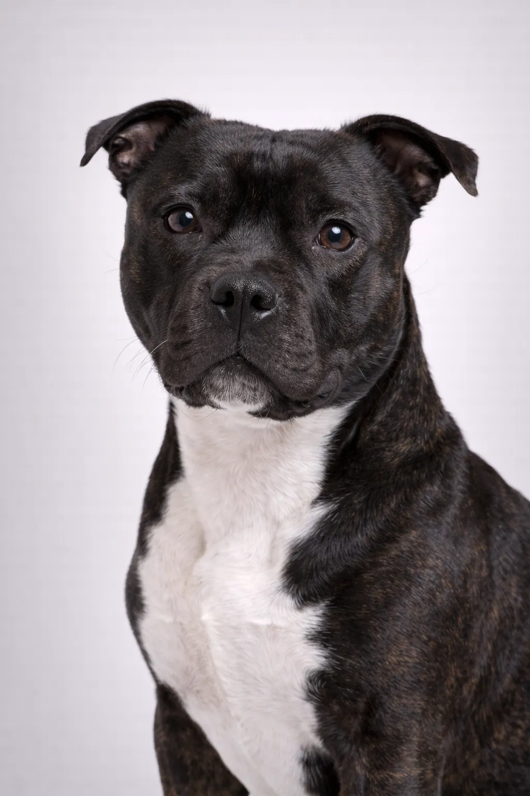

Staffordshire Bull Terrier
Lo Staffordshire Bull Terrier è un cane coraggioso e affettuoso, soprannominato 'nanny dog' per l'amore verso i bambini.
Valutazioni della Razza
Temperamento
Panoramica
Lo Staffordshire Bull Terrier discende dai cani da combattimento inglesi. Oggi è un amato cane da famiglia, noto per la dolcezza con i bambini.
Temperamento
Gli Staffie sono coraggiosi, affettuosi e giocherelloni. Sono eccellenti con i bambini e devoti alla famiglia. Possono essere dominanti con altri cani.
Salute
Predisposti a displasia dell'anca e del gomito, cataratta, problemi cutanei e L-2HGA. Aspettativa di vita 12-14 anni.
Esercizio
Esigenze di esercizio moderate-alte. Passeggiate quotidiane e gioco sono essenziali. Sono muscolosi e atletici.
⦿ Questa Razza è Giusta per Te?
✓ Ideale Per
- Famiglie con bambini
- Active households
- Those wanting an affettuoso companion
- Residenti in appartamento with exercise commitment
✗ Non Ideale Per
- Chi cerca un cane da guardia
- Case con piccoli animali
- Stili di vita sedentari
- Areas with breed restrictions
Il Nostro Verdetto: Lo Staffie è un compagno leale e affettuoso per famiglie. Richiede socializzazione con altri cani.